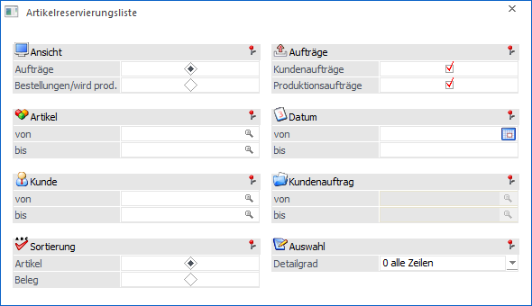
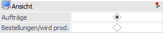
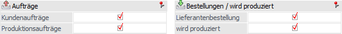
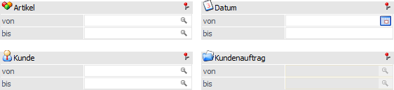
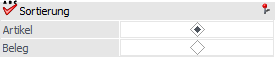
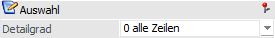
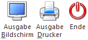

Über dem Menüpunkt…
1 WinLine FAKT
1 Einkauf
1 Reservierungen
1 Reservierungsliste
… kann eine Liste aller Reservierungen ausgegeben werden.

Folgende Einstellungen können vorgenommen werden:
Ansicht

Ø Ansicht
An dieser Stelle wird definiert, in welcher Sichtweise die Liste ausgegeben werden soll. Hierbei stehen folgende Varianten zur Verfügung:
ü Aufträge
Es werden für jeden
Auftrag (Kundenaufträge und / oder herzustellende Produktionsaufträge) die
zugehörigen Lieferantenbestellungen, Produktionsaufträge bzw. die
Reservierungsmenge vom Lager angedruckt. D.h. woher erhalten die Bedarfserzeuger
die benötigte Menge.
ü Bestellungen/wird prod.
Es
werden für jede Bestellung (Lieferantenbestellung und / oder herzustellende
Produktionsaufträge) die zugehörigen Kundenaufträge, Produktionsaufträge bzw.
die Menge, welche auf das Lager gebucht wird, angedruckt. D.h. für welche
Bedarfserzeuger ist die neue Menge vorgesehen.
Aufträge bzw. Bestellungen / wird produziert

Entsprechenden der Auswahl im Bereich "Ansicht" kann an dieser Stelle angegeben werden, welcher Arten von Aufträgen oder Bestellungen in der Ausgabe berücksichtigt werden sollen.
Hinweis
Mit Hilfe eines Symbols wird innerhalb der Liste direkt angezeigt, um was für einer Art von Bedarfszeile es sich handelt.
ü - Kundenauftrag
ü - Einkaufsdisposition / Lieferantenbestellung
ü - Produktionsauftrag / wird produziert
Ø Aufträge (nur bei Ansicht "Aufträge")
Mit Hilfe von Checkboxen kann definiert werden, ob Kundenaufträge und / oder Produktionsaufträge ausgegeben werden sollen.
Ø Bestellungen / wird produziert (nur bei Ansicht "Bestellungen/wird prod.")
Mit Hilfe von Checkboxen kann definiert werden, ob Lieferantenbestellungen und / oder zu produzierende Produktionsaufträge ausgegeben werden sollen.
Selektion

Ø Artikel von / bis
An dieser Stelle kann eine Selektion auf die auszuwertenden Artikel vorgenommen werden.
Hinweis
Wird im Feld "Artikel von / bis" z.B. nur eine Artikelnummer eingegeben und dieser Artikel hat auch noch Ausprägungen, so werden alle Ausprägungen automatisch mit angedruckt. Nur wenn während des Anklickens des "Ausgabe-Buttons" die STRG-Taste gedrückt wird, wird nur der Hauptartikel alleine ausgewertet.
Ø Datum von / bis
An dieser Stelle kann eine Eingrenzung auf den zu betrachtenden Zeitraum erfolgen.
Ø Kunde von / bis bzw. Lieferant von / bis
Entsprechenden der Sichtweise (siehe Bereich "Ansicht") kann an dieser Stelle eine Selektion auf Kunden oder Lieferanten vorgenommen werden.
Ø Kundenauftrag bzw. Produktionsauftrag oder Lieferantenbestellung
Die Selektionsmöglichkeiten an dieser Stelle sind u.a. abhängig von der getroffenen Sichtweise (siehe Bereich "Ansicht").
ü Option "Aufträge"
Wurde im
Bereich "Aufträge" nur "Kundenaufträge" ausgewählt, dann kann auf Kundenaufträge
eingeschränkt werden. Sollte hingegen nur "Produktionsaufträge" aktiviert sein,
dann ist eine Selektion auf Produktionsaufträge möglich.
Hinweis
Wurden im Bereich "Aufträge" beide Auswahlen aktiviert, so kann an dieser Stelle keine weitere Selektion vorgenommen werden.
ü Option "Bestellung/wird
prod."
Es kann eine Selektion auf Lieferantenbestellungen erfolgen.
Sortierung

Ø Sortierung
An dieser Stelle kann definiert werden, ob die Sortierung innerhalb der Liste nach Artikeln oder nach Belegen erfolgen soll.
Auswahl

Ø Detailgrad
Mit Hilfe einer Auswahlliste kann bestimmt werden, was für Bedarfszeilen ausgegeben werden sollen.
ü 0 - alle Zeilen
Es werden alle
Bedarfszeilen gemäß der zuvor getroffenen Einschränkungen angedruckt.
ü 1 - nur Konflikte
Es werden nur
die Bedarfszeilen angedruckt, bei denen keine Reservierung vorhanden ist oder
bei welchen die Ware nicht rechtzeitig zur Verfügung steht ("Sperrliste").
ü 2 - ohne Konflikte
Es werden
nur die Zeilen angedruckt, bei denen eine Reservierung vorhanden ist und die
Ware rechtzeitig zur Verfügung steht.
Buttons

Ø Ausgabe Bildschirm
Mit Hilfe des Buttons "Ausgabe Bildschirm" oder der Taste F5 wird die Auswertung am Bildschirm ausgegeben.
Ø Ausgabe Drucker
Durch Anwahl des Buttons "Ausgabe Drucker" wird die Auswertung am Drucker ausgegeben.
Ø Ende
Mit dem Button "Ende" bzw. der Taste ESC wird der Menüpunkt geschlossen.